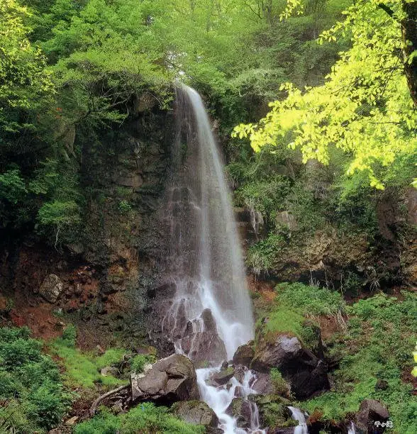
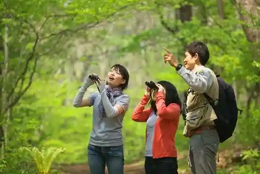
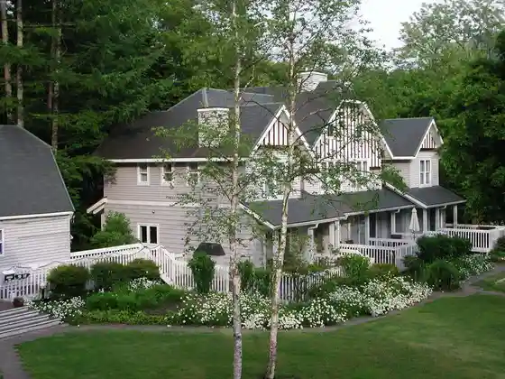
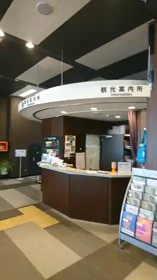

Karuizawa
Karuizawa · Nagano
Karuizawa
Highlighted on the Nagano map.

Sights
Sengataki
Sengataki Falls in a quiet valley near Karuizawa, reached by a gorge path through distinctive woodland.
Pikkio

Ameriihausu Karuizawa
Amelie House Karuizawa, North American-style condominium cottages in the forest, listed for pet-friendly cottage stays.

Karuizawa Tourist Information (Karuizawa Ekinai)
Karuizawa Tourist Information (Naka Karuizawa Ekinai)

Karuizawa Kanko Hall
Hoshi no Ya Karuizawa
Hoshinoya Karuizawa, a valley resort of detached guest villas with water-, forest-, and garden-facing room types.
Ehongohon Do
Ehon Gohon-do, a Karuizawa bookshop focused on cookbooks, food-themed picture books, design, and everyday living titles.
Ryu Kaeshi Falls
Shishiiwa Hausu
Shishiiwa House, a forest retreat hotel in Karuizawa whose first building (2019) was designed by architect Shigeru Ban.